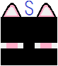

S__Minecraft
遠田紫奈 / Susan Minecraft
Programming Languages
- Coffeescript
- Javascript
- Go
- Java
- Swift
- Typescript
- C#
- C/C++
- Haskell
Markup Languages
- HTML/CSS
- Haml
- SCSS
Enviroment
Only major ones I use.
- OS
- Windows 8.1
- Video Editing
- AviUtl
- Image Editing
- krita
- JTrim
- pixia
- paint
- Text Editing
- Mery
- IDE
- Eclipse
- Visual Studio